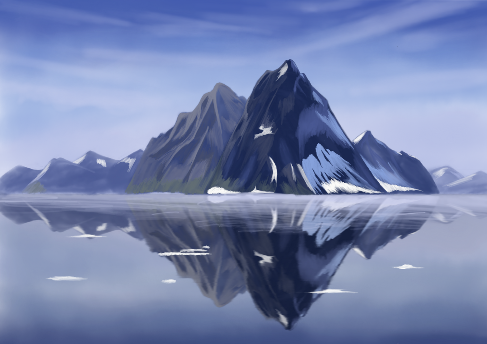
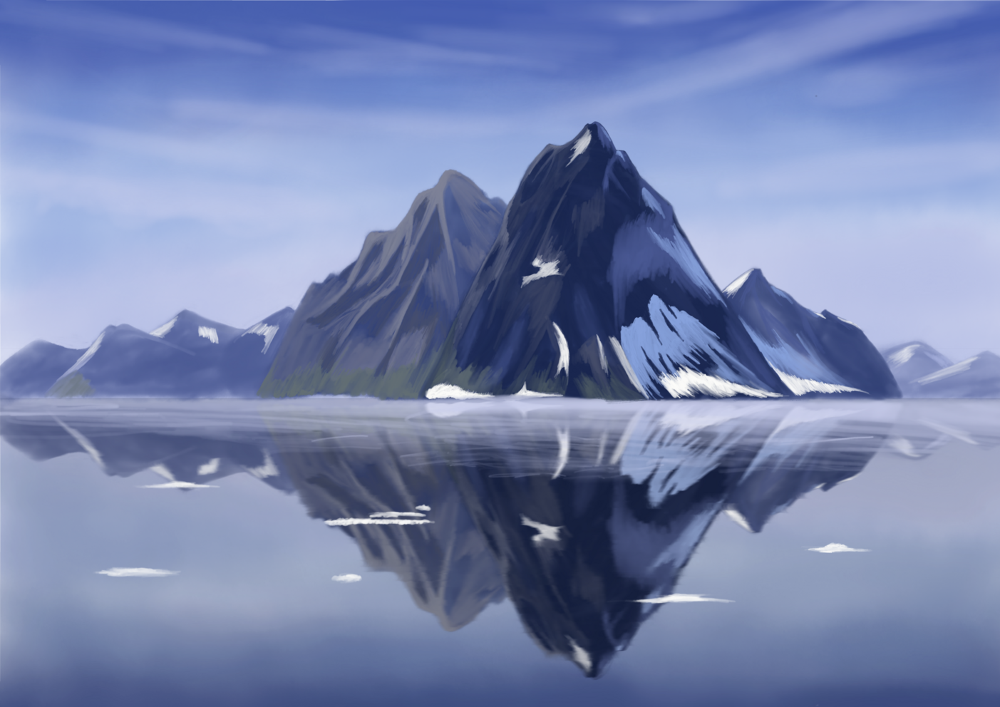
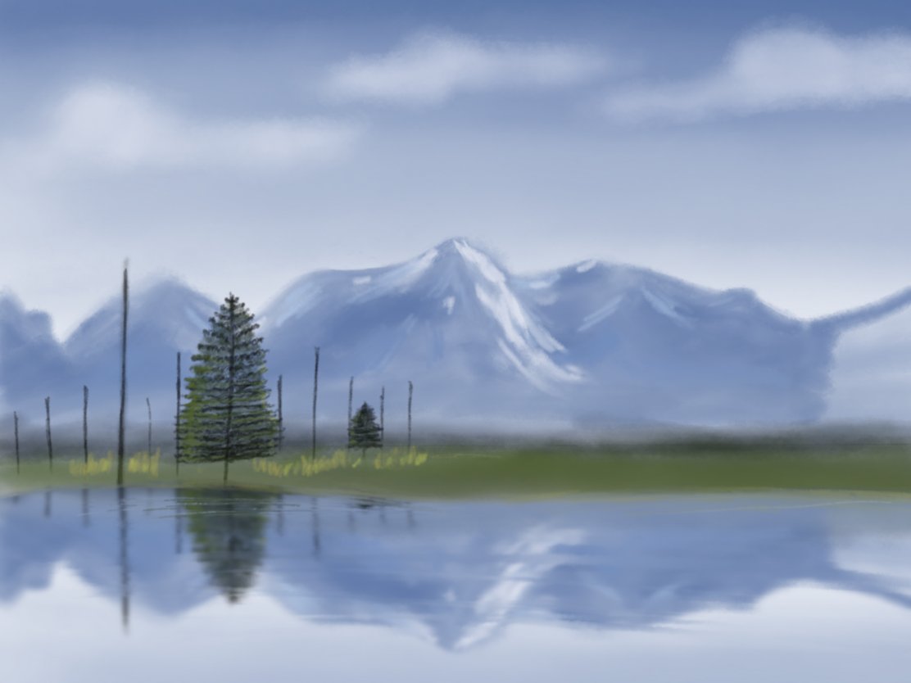
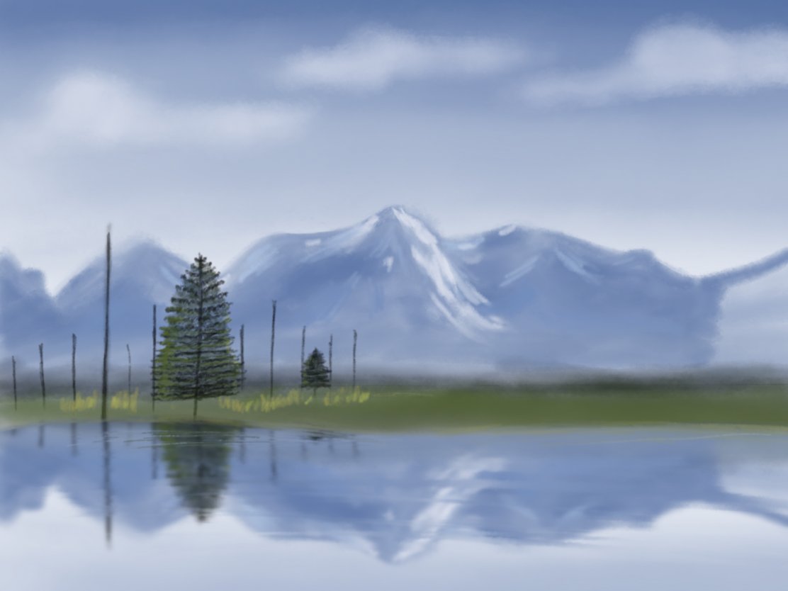

Starting with digital painting
Having drawn a lot of black-and-white ink sketches, I have now moved to draw digitally. Last summer, I got an iPad Pro, and I’m learning the basics of digital painting now. It has unlocked a myriad (literally) of colors and new techniques to acquire, so I felt like wandering in the fog again.
To impose a structure on my journey and follow the advice of deliberate practice, I looked for a systematic course to guide me through the learning process.
Video tutorials
Ctrl+Paint sounded like that but, after taking a detailed look it felt focused on watching videos with theory (and teaching Photoshop’s interface, while I use Procreate) as opposed to particular exercises.
I thus turned to Youtube, which has dozens of videos on every topic. I started by following a couple of landscape tutorials by James Julier. I particularly liked them, as the author uses only a simple round brush, which resulted in one less decision to make by me.
 
 

Here are the pictures I created. As you see, I didn’t have the patience to finish all the details. I was also missing a planning/sketching phase, as James dives directly into painting but to me, it wasn’t always clear what he’s drawing at a given moment.
Other stuff I watched on youtube include angrymikko, even though his lessons seem a little too advanced for me yet, and Marco Bucci. I also watched Marco’s digital drawing course on skillshare (using a trial). Overall, I didn’t find a lot of quality content on skillshare, though.
Brushes
Many of the Youtube videos I watched were of the form: “You can buy my brush set here. It’s easy to follow my tutorial with it”. It was rather disappointing, as I didn’t want to spend my precious motivation on learning someone’s vendor locked-in brush.
I thought that I like the texture of watercolors though, so I still found some free watercolor brush set and tried to follow a watermelon tutorial.
{kind=link}
While the effects were not terrible, I felt like I had to fight against the brushes a bit. Furthermore, having a lot of different brushes (with many of them being hard to use) slowed me down as I needed to spend time to choose among them.
In the end, after doing these tutorials I knew I should look for one “general” brush for everything and that I want something simple, namely, a brush with:
- ~uniform opacity within a stamp
- ability to cover an area with a flat color (potentially with multiple strokes)
- no/little reaction to tilt (it’s way too hard for me to control)
- pressure sensitivity shouldn’t change the size of the stroke (it’s hard to control edges of the lines otherwise)
- no line smoothing, as it looks weird when the line doesn’t end up where I draw + the delay is annoying
I tried finding a brush like this online. Most of them the ones I found were hard to use, with various effects happening with tilts and pressure. I found one, though, a copic marker brush which (after some small modifications) I liked a lot. Apart from it, I made a couple of versions of the default round brush (with various shapes) as I liked the idea of them not being rotationally symmetric (so that you kind of can draw a rough edge without making the brush very small).
Other exercises
Apart from directly following full tutorials and semi-productively watching videos, I did a couple of shorter exercises:
- Shading a crab to make it look 3D. It was surprisingly simple to achieve that effect with the selection tool & airbrush for the shading. One thing, however, that I missed in procreate, was the ability to disable touch during selection. Without it, it’s currently easy to put extra selection points by mistake.
{kind=link}
- Drawing Ghibli-style trees. I tried doing it using the “watercolor” brushes but they made the edges smooth what didn’t look great. For the last version (bottom), I used an oval version of the simple round brush, which I think looks a bit better.
{kind=link}
- I tried reproducing a Ghibli background. It was a good lesson, e.g. on color choice and the amount of time to spend on various details (you can see I dropped some details mid-tree). For this picture, I used a “Painty Round” brush from Procreate all-star brush set. While the brush itself was ok, I don’t feel like I used much of its texture, and, at the same time, the streamlining/line smoothing drove me mad.
{kind=link}
- Still life: a standard exercise from the classical painting is also applicable for digital. It removes the complexity of deciding what exactly to draw; you’re merely replicating what you see and improving your craft.
{kind=link}
- Painting with light: an exercise where you take a picture and try painting it with just one color. It seems like a useful thing to do at the beginning of the piece to decide where the light/shadow areas are. I haven’t tried it yet but will do it soon.
Random hints
Here are some of the hints repeated by various artists:
- During digital painting, it’s worth it to flip the canvas horizontally or vertically from time to time to assess the picture from the new view. The final artwork should work whether it’s flipped or not.
- On the other hand, you can disable colors on the tablet and draw in black&white, using the color picker to choose colors. You will be painting in the full color range, but the areas of different value will be visible better.
- Despite many artists selling custom Procreate brushes on their channels, they recommend learning a single brush and using it thorough the whole painting
- The light should be on the opposite side of the hue range from the shadow. In other words, if the light is warm, the shadow should be cold.
- Multiply blending mode is useful for shadows (as it always makes things darker)
- To learn to match the colors in real-life and in the color palette, there is an exercise: we take a picture, select a part of it, and try to guess the color by selecting it in the palette.
With all of these lessons, tutorials, and exercises I have a lot of things to try. I’ll likely make a new post after I put them into practice some more.